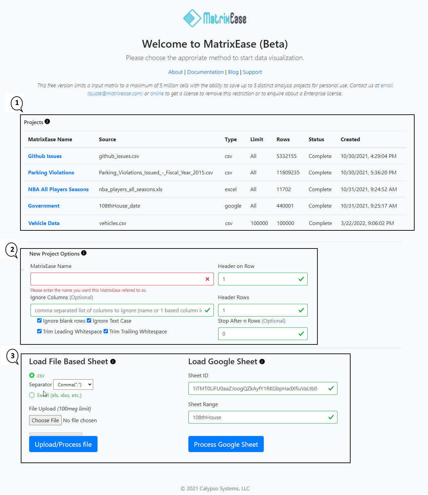
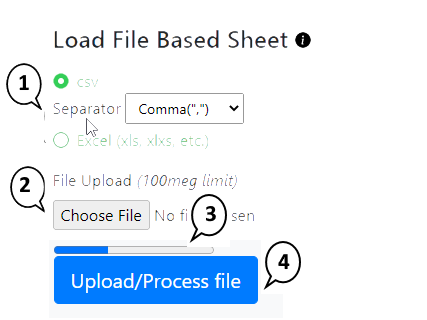
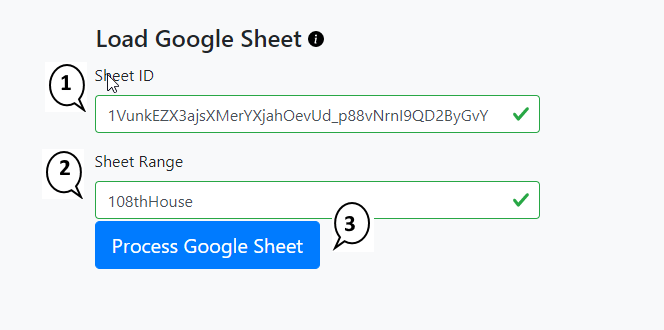
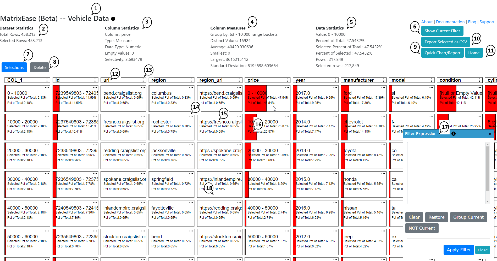
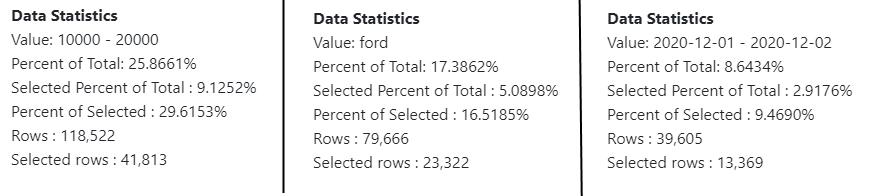

Dashboard
The dashboard is where new projects are created and saved work is reopened. It also holds the source definition for the data you want to analyze.

The interface is centered around a few predictable areas: project setup, source loading, matrix exploration, and metrics.
The dashboard is where new projects are created and saved work is reopened. It also holds the source definition for the data you want to analyze.

MatrixEase supports two main source models:


After import, the matrix view becomes the main workspace. This is where categories, counts, and intersections are reviewed.

Filtering narrows the data by category while metrics reveal column-level and relationship-level details. This is the fastest way to move from raw rows to useful patterns.
